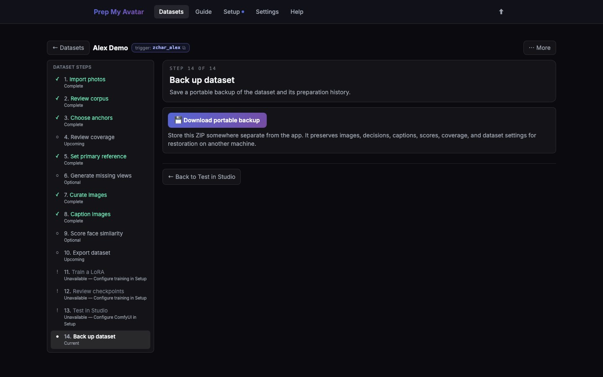

First run · 21 of 21
Step 21: Back up dataset
A portable backup preserves the dataset itself: originals, working images, captions, settings, relationships, decisions, provenance, and starred best settings. It is different from the smaller training export ZIP.
The backup does not include raw training-run folders, .safetensors checkpoints, LoRAs copied into ComfyUI, or generated Studio comparison images. Save those separately if you need them.

Before you begin
Choose a storage location outside the app's data folder, such as an external drive or a backed-up folder. Treat the backup as sensitive because it contains the original images.
One dataset-backup ZIP supports at most 5,000 image records, 10,050 image/reference files, and 2 GB of uncompressed files. It also validates unusually large metadata before creating the ZIP. If Backup reports a limit, use the whole-data-folder procedure below instead; the app cannot split one dataset across backup ZIPs.
Do this
- Open Back up dataset in the dataset step navigator. Its URL ends in
/backup. - Select Download portable backup.
- Save the backup ZIP outside the Prep My Avatar data directory.
- If you trained locally, return to Review checkpoints and use Run folder and LoRA folder to locate and separately copy the training run and every
.safetensorsfile you want to retain. - If you trained in the cloud, wait for the run to finish, open Runs, and select Download the LoRA. The dataset's Train a LoRA page also offers Download the cloud-trained LoRA (.safetensors) for its latest completed cloud run. Save the downloaded file outside the app's data folder.
- In Studio, open each result image you need and select Download image in its preview.
- Wait for the backup download to finish and confirm the file is not empty.
- Keep at least one second copy if losing the dataset would matter.
- To prove recovery before deleting or moving the original installation, return to Datasets, choose Restore backup, and restore the ZIP. Restore creates a new dataset rather than overwriting the existing one.
- Delete the temporary restored copy only after comparing it with the original. Deleted datasets first move to Settings → Maintenance → Trash.
If the dataset is above a ZIP limit, stop the app first: press Ctrl+C in its terminal, or close the Windows terminal window. Copy the entire data folder from inside prep-my-avatar to your safe location and verify the copied folder is not empty. To test that cold backup, get a separate clean checkout as described in Step 1 and keep both copies stopped. If the clean checkout already has a data folder, rename it; if it does not, no rename is needed. Copy the saved folder into the checkout as data, then start the app using Step 1. Never merge two data folders by hand.
You are finished when
You have completed one of the two recovery checks: the portable ZIP exists in a separate safe location and has been restored successfully once, or an over-limit cold copy of the entire data folder has opened successfully in a separate checkout. Any separately downloaded LoRAs and Studio images are also in safe storage. Your first complete run is now finished; use the reference pages for deeper dataset choices, troubleshooting, and support.